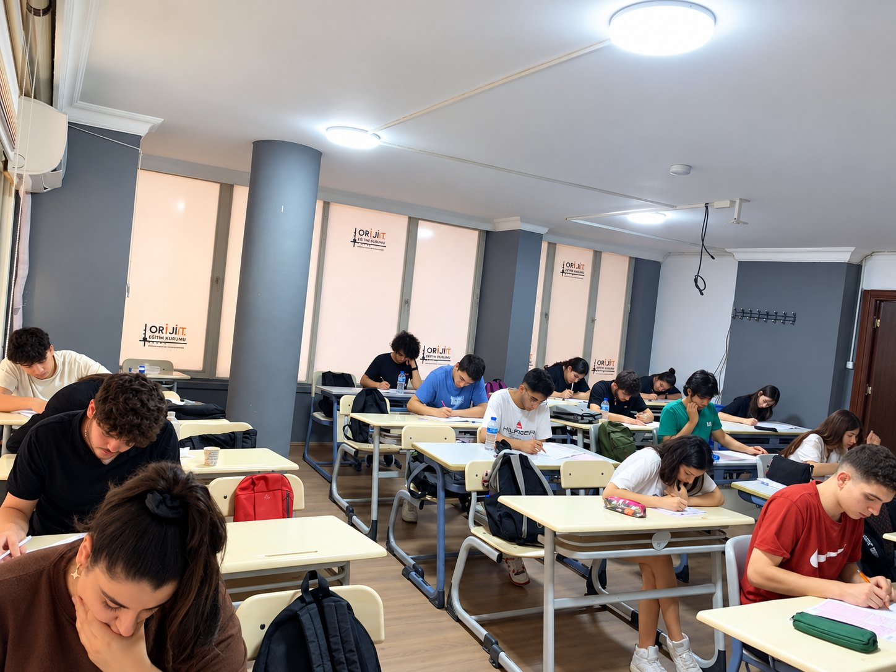
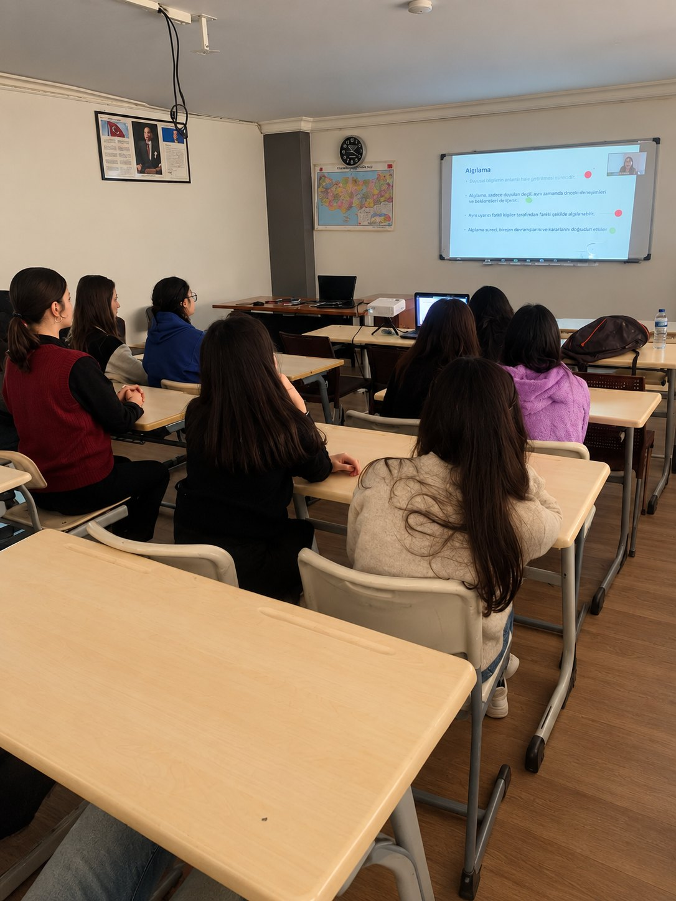

İG
İnan Gökpınar
Matematik ÖğretmeniKurucu kadroda yer alan matematik öğretmeni.
ORİJİN Eğitim Kurumu; 2026–2027 döneminde 9, 10 ve 11. sınıflarda Türkiye Yüzyılı Maarif Modeli’ne uyumlu akademik destek sunar; 12. sınıf ve mezun gruplarında ise YKS odaklı hazırlık sürecini yoğunlaştırır.


Maarif Modeli kazanımlarını destekleyen, okul başarısı ile YKS temelini birlikte güçlendiren program.

Son yıl temposu, TYT–AYT denemeleri, eksik kapatma ve hedef takibi.

Okul sonrası odaklı tekrar, soru çözümü ve yoğunlaştırılmış konu kampları.

Planlı çalışma saatleri, öğretmen desteği ve düzenli soru çözüm sistemi.
9. sınıftan YKS gününe kadar kesintisiz akademik takip.
Ders, etüt, akşam kampları, deneme analizi ve birebir rehberliği öğrencinin sınıf düzeyine göre aynı sistemde buluşturuyoruz.
Hakkımızda daha fazlaHer öğrencinin gelişimi, hedefi ve çalışma düzeni ayrı değerlendirilir.
Sadece sınavda değil; planlama, motivasyon ve karar süreçlerinde yanınızdayız.
Verimli çalışma için sade, konforlu ve odaklanmayı destekleyen atmosfer.
Alanında uzman, sınav sistemine hâkim ve öğrenci odaklı öğretmenler.
Net değişimi, konu eksikleri ve ilerleme verilerini düzenli olarak takip ederiz.
Öğrencinin kendi çalışma sistemini tanımasını ve sürdürülebilir hale getirmesini hedefleriz.
ORİJİNli öğrencilerin hedefe giden yolunu sadece sonuçlarla değil, süreçte gösterdikleri gelişimle de ölçüyoruz.
Tüm başarılarımızKurucu kadroda yer alan matematik öğretmeni.
Fizik branşında akademik takip ve soru çözümü.
Kimya dersleri ve sınav hazırlık desteği.
Biyoloji branşında düzenli konu ve soru takibi.
9–10–11. sınıf Maarif Modeli ile 12. sınıf & mezun YKS programları için tanıtım görüşmeleri.
Okul sonrası tekrar, soru çözümü ve konu tamamlama kampları.
Planlı çalışma ve öğretmen destekli etüt saatleri için kayıtlar başladı.
9. sınıftan mezun grubuna kadar YKS yolculuğunu; doğru program, akşam kampları, etütler ve düzenli rehberlikle birlikte planlayalım.
Program, seviye ve çalışma düzeni için kısa bir tanışma görüşmesi planlayın.
Görüşme planla